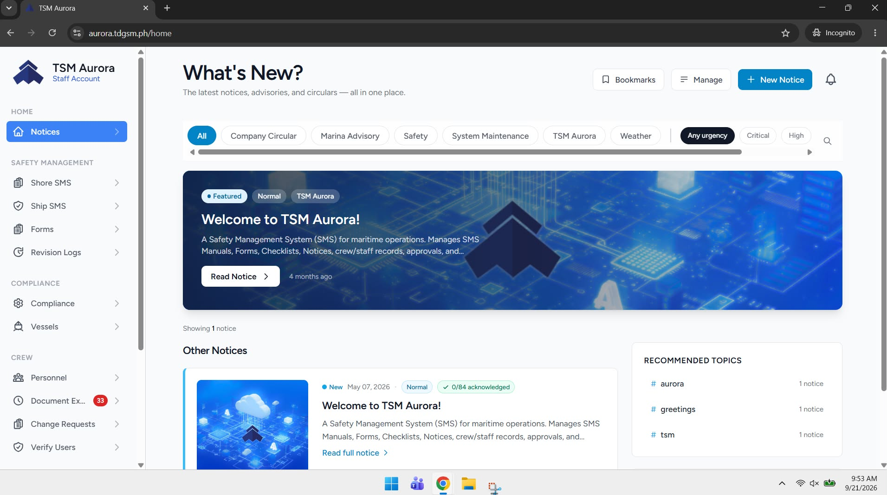
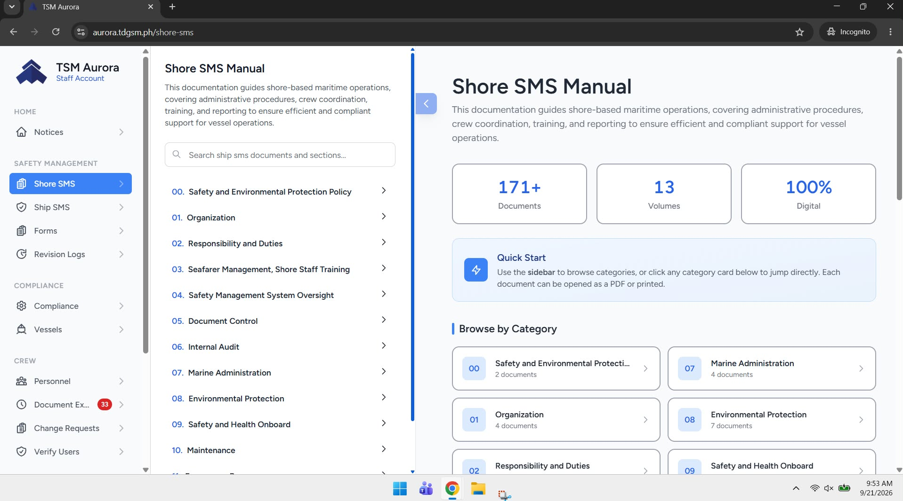
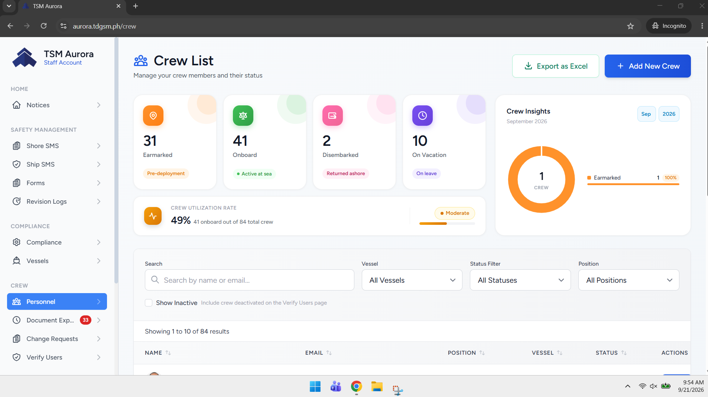

Project Detail

Project Aurora is a course-based digital manual management system designed to transition maritime operations from paper-heavy reference materials to an intuitive digital ecosystem. By addressing the challenge of fragmented, hard-to-access documentation, the system delivers central access to critical ship-to-shore operating procedures, elevating compliance, user accessibility, and operational efficiency for maritime personnel.

